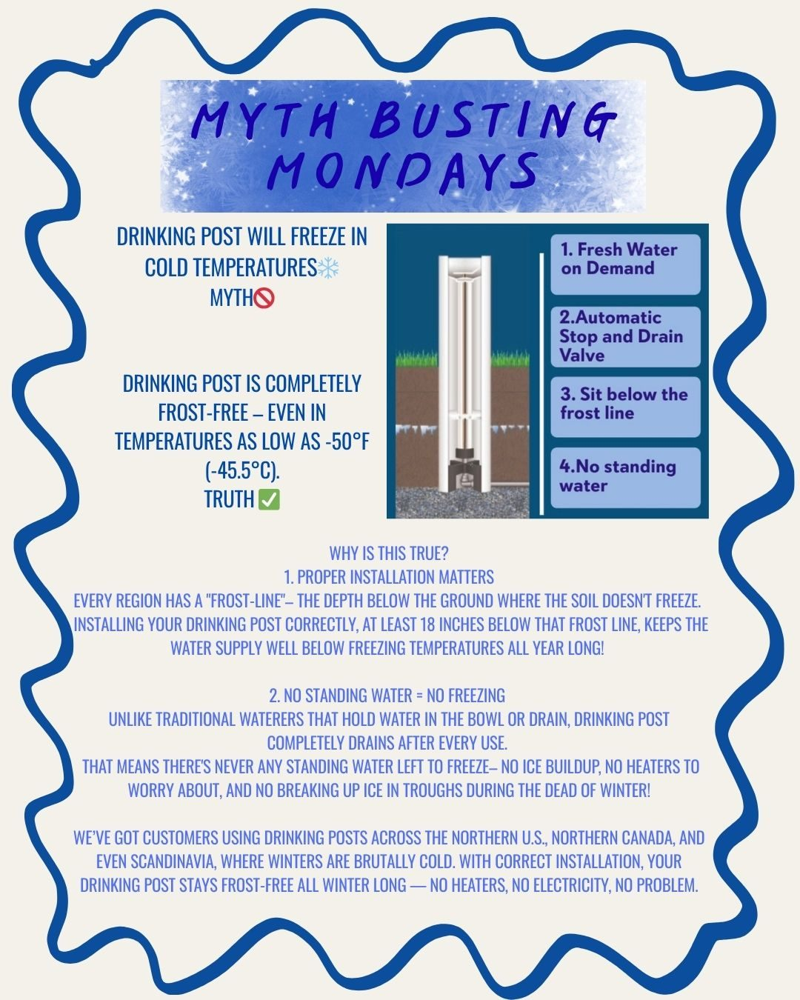
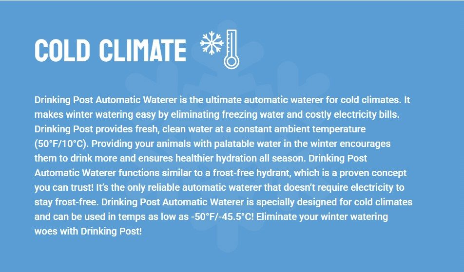

Are you tired of chipping frozen water tanks and hauling water?
Drinking Post Waterers are the answer!
Providing clean drinking water is essential for the health and wellbeing of animals. With Drinking Post they receive this every time they take a drink and the post's design allows the water to drain out-allowing it to be frost free and prevent it from freezing up in the winter months. There are various sizes for all animals. Other bonus is there is no electricity required! This means you are saving huge expenses in running heaters and other waterers that can only be used in nicer weather.
For More Information: https://dpwaterer.com/
Contact us today if you are looking to purchase a post as we are an authorized dealer. (We do not provide installation).



https://dpwaterer.com/horse-waterer-installation-instructions/